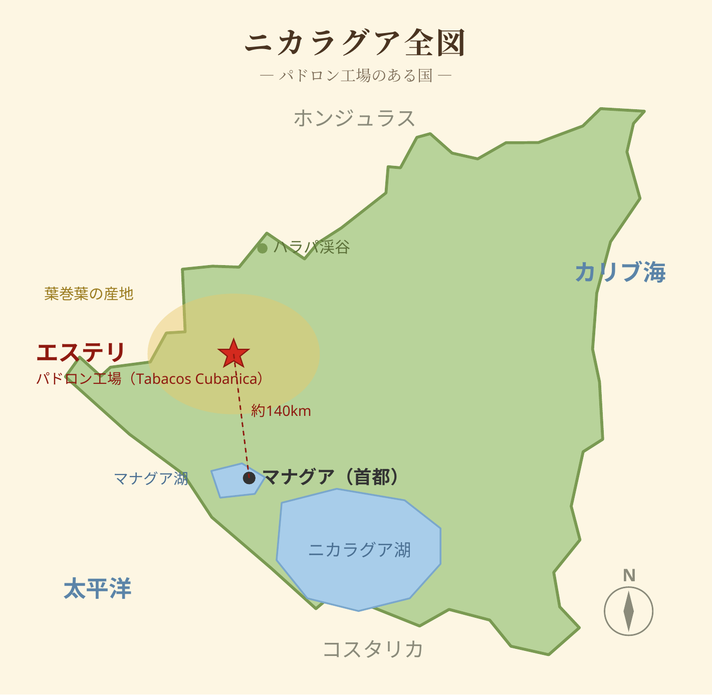
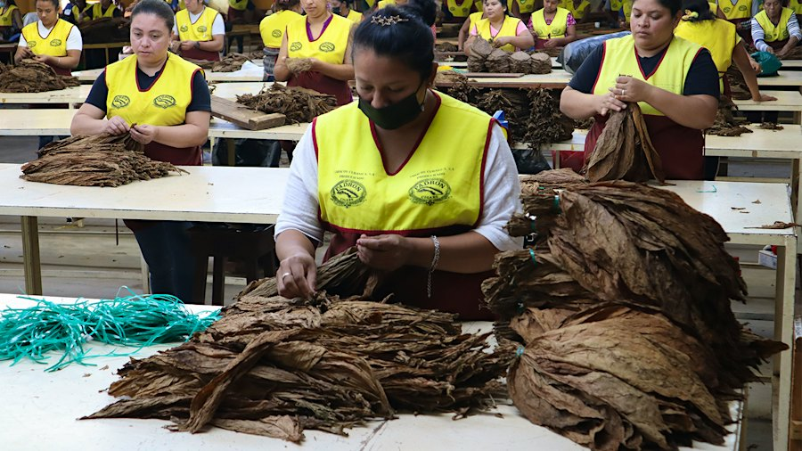
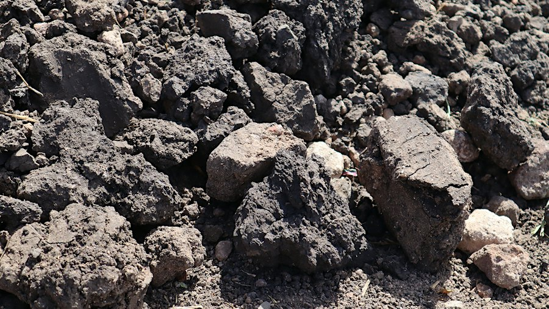
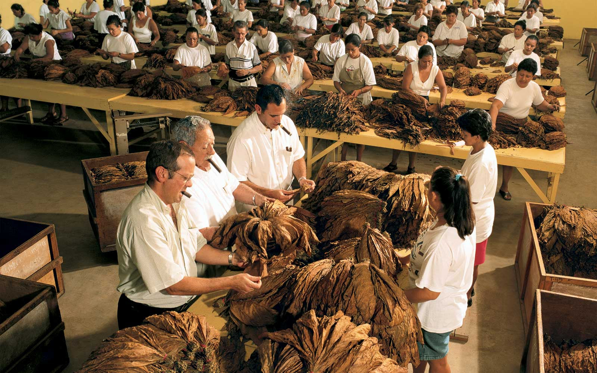
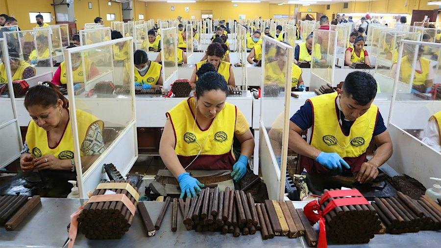
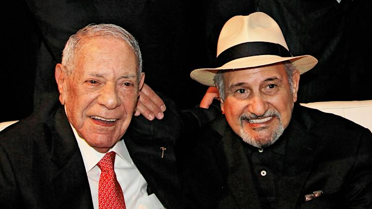
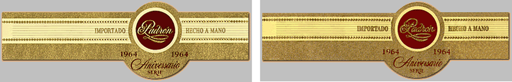
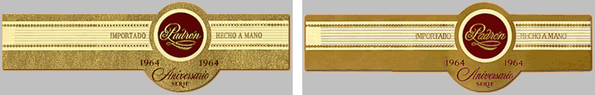

世界の葉巻ニュース 特集ゲラ
特集 — パドロン 広告を打たない王者の60年
パドロン（Padrón）は、ニカラグア産葉巻の頂点に立つ一族経営のメーカーです。創業は1964年。資本金はわずか600ドルでした。宣伝広告をほとんど打たず、他社とのコラボレーションも60年でただ1度。それでも専門誌の年間最優秀賞をどの会社よりも多く受け、世界中の愛好家が「非キューバの王道」と認める存在になりました。今回はその一族の歴史、評価、葉と農場、ライバルたちとの関係、そして偽物との戦いまでを掘り下げます。
◆ 一、一族の歴史 — ピナール・デル・リオからエステリへ
一族の葉巻づくりは19世紀後半に始まります。ホセの祖父ダマソ・パドロンはカナリア諸島からキューバのピナール・デル・リオへ渡り、ピロトの町で葉を育て、やがて小さな工場まで持つようになりました。ホセ・オルランド・パドロンは1926年、そのピロトに生まれ、少年時代から家族の葉の仕事に就いています。
転機は1961年。革命政府に農地を接収され、ホセは妻子とともにキューバを離れます。スペイン、ニューヨークを経て1962年にマイアミへ。土木や大工などの日雇い仕事で糊口をしのぐ日々でした。この頃、友人から小さなハンマーを贈られ「このハンマーがお前を成功させる」と言われたという逸話が残ります。ホセはそのハンマーをお守りのように大切にし、後に社のシンボルにも取り入れられました。
1964年9月8日、キューバ難民支援プログラムから受けた600ドルを元手に、パドロン・シガーズが産声を上げます。当初はマイアミのリトルハバナで「フマス」と呼ばれる素朴な葉巻を売る小さな店でした。1967年、ホセはニカラグア・ハラパ渓谷の葉に出会い、その土と気候を「キューバの再来」と評します。1968年にはニカラグア産葉の葉巻を発売。1970年、本拠をニカラグア北部のエステリへ移しました。
試練は続きます。1970年代後半、革命の混乱で工場はホンジュラスのダンリへ一時避難を余儀なくされ、一族の歴史をまとめた書物によれば、工場の壁には弾痕が残り、操業停止の折には従業員たちが街を行進して再開を求めたといいます。1990〜93年には米国の対ニカラグア禁輸で最大市場を失い、1998年にはハリケーン・ミッチでパソ・レアル農場が壊滅的な被害を受けました。
それでも一族はラインを磨き続けます。1994年に葉を4年熟成させる「1964 Anniversary Series」、2002年に5年熟成の「Serie 1926」、2009年には10年熟成の「Family Reserve」が登場。2017年12月5日、ホセは91歳で逝去しました。現在は息子のホルヘ・パドロンが社を率い、三代目への継承が進んでいます。
◆ 二、評価 — 年間1位を5度、それでも広告は打たない
パドロンの評価を象徴するのが、専門誌 Cigar Aficionado の「Cigar of the Year」（年間最優秀葉巻）です。受賞は2004年の Serie 1926 40th Anniversary、2007年の Serie 1926 No.9（97点）、2009年の Family Reserve No.45 Maduro、2021年の 1964 Anniversary Torpedo、そして2025年は「60th Anniversary Perfecto」が97点で Top 25 の第1位に輝きました。5度の戴冠は葉巻メーカー最多級で、同誌は2022年の時点で「どの会社よりも多い」と記しています。
興味深いのは、その売れ方です。パドロンは消費者向けの宣伝広告をほとんど行いません。それでも同誌系の小売店投票では、Anniversary 系が「最も売れるブランド」に繰り返し選ばれてきました。派手なセールや値引き競争とも無縁で、評価と口コミだけで王座に居続ける、業界でも稀な在り方です。
◆ 三、葉と農場 — 全部ニカラグア、熟成は「葉」で済ませる
パドロンの葉巻は、ラッパー、バインダー、フィラーまですべてニカラグア産の「プーロ」です。種はキューバ系のハバノ種を太陽の下で育てるサングロウン。色調はナチュラルとマデューロの展開です。ブレンドの骨格を理解する鍵は、タバコ株の「摘む位置（プライミング）」にあります。
産地は3つ。エステリは火山性の黒土が生む力強さと土の香りが持ち味で、ブレンドの背骨です。北のハラパ渓谷は赤土の産地で、甘みと香りの良さで知られます。その中間のコンデガが両者をつなぎます。ホセが1967年に「キューバの再来」と見込んだのは、このハラパの葉でした。


栽培は、自社農場に加え、パドロン専属の契約農家が担う畑が大半を占める体制です。収穫した葉はピロンと呼ばれる大きな山に積んで発酵させ、樽や俵で年単位の熟成に入ります。熟成期間はラインごとに公表されており、1964 Anniversary が4年、Serie 1926 が5年、Family Reserve は10年。エステリには20棟を超える倉庫があり、約6年分の生産量にあたる葉（葉巻2,500万本分）を蓄えていると伝えられます。



ここに、取材で目を引く指摘があります。多くのメーカーは巻き上げた葉巻を熟成室でしばらく寝かせますが、Cigar Aficionado の工場取材は「パドロンは業界の例外で、バンドを付けたら比較的速やかに箱詰めして出荷する」と伝えています。熟成は製品ではなく葉の段階で完結させる、という設計思想です。だからこそ、あの巨大な備蓄が必要になります。

工場（Tabacos Cubanica）では約90組のトルセドールが手巻きし、年間800万〜950万本規模を生産します。杉の箱まで敷地内の工房で自作する徹底ぶりです。
◆ 四、立ち位置とライバル — 三者三様のエステリ
パドロンの立ち位置は、同時代のライバルと並べると際立ちます。エステリには、対照的な3つの成功モデルが同居しているのです。
マイファザー（ガルシア家）— ブレンダー帝国。当主ドン・ペピン・ガルシアはキューバの工場で腕を磨いたマスターブレンダーで、2003年頃にニカラグアへ渡りました。当初は他ブランドの受託ブレンドで名を上げ（タトゥアヘの初期作も彼の手によるものです）、2009年にエステリに大工場を開設。Cigar of the Year には Flor de las Antillas（2012年）、Le Bijou 1922（2015年）、The Judge（2024年）と3度輝き、王座を争う最大のライバルです。多数のブランドを抱える「帝国」型である点が、単一ブランドのパドロンと好対照をなします。
プラセンシア — 葉の帝国。1865年から6代続く葉の一族で、中米最大級の栽培者です。長く他ブランドの製造請負（ロッキー・パテル、アレック・ブラッドリー等）を担い、自社ブランドに本腰を入れたのは2017年から。規模ではパドロンを遥かに上回りますが、ブランドの格式ではパドロンが先輩格です。
ホヤ・デ・ニカラグア — 開拓の同志。1968年創業のニカラグア最古のプレミアム工場で、パドロンがエステリに来た1970年当時からの隣人です。提携関係はありませんが、同じ街で革命と禁輸をくぐり抜けた「同志」として、パドロンの物語には欠かせない存在です。
華やかな限定商法で知られる Opus X のフエンテ家とも、パドロンは好対照です。広告なし、割当の喧騒なし、ラインも絞る。その静かな佇まいこそが「非キューバの王道」と呼ばれる理由でしょう。
◆ 五、フエンテとの関係 — 60年でただ1度のコラボレーション
パドロンが60年で唯一、手を組んだ相手がアルトゥーロ・フエンテです。家長のカルロス・フエンテSr.とホセ・O・パドロンは50年を超える友人同士でした。1970年代には奇しくも両家ともニカラグアに工場を持ち、革命の混乱で共に工場を焼かれています。フエンテはドミニカへ去り、パドロンはエステリに残った。分かれた道の先で、息子たちの代に再び並ぶことになります。

発案は2020年、マイアミのホルヘのオフィスでカルロス・フエンテJr.とウイスキーを酌み交わしていた時でした。「互いの父を讃える葉巻を、それぞれが作って同じ箱に入れよう」。2022年7月、見本市PCAで「Fuente y Padrón Legends」が披露されると、業界紙の記者が「見本市でこれほどの発表は見たことがない」と記すほどの反響を呼びました。

箱は40本入り。フエンテがホセを讃えて作った20本（7×50 チャーチル、丸型）と、パドロンがカルロスSr.を讃えて作った20本（同サイズ、ボックスプレス）が収まります。ブレンドは両家とも完全非公開。バンドには両家の象徴と「Familia, Perseverancia, Legado（家族、忍耐、遺産）」の言葉が入り、収益の一部は両一族の慈善財団に寄付されます。内蓋にはホセの「人生の3つの原則…謙虚であること、助けてくれた人たちへの感謝を忘れないこと」と、カルロスの「私の辞書に『もし』や『不可能』という言葉はない」という言葉が刻まれています。
発売までの道のりも一筋縄ではいきませんでした。2023年にも発売はなく、同年末にはドミニカから届いた箱が輸送中に破損して再延期。最初の箱が小売店に届いたのは、2024年の見本市PCAの前夜でした。公式の希望小売価格は設定されず、市場では1箱7,120ドル（約1,128,000円）前後、1本あたり178ドル（約28,200円）で取引されています（1ドル＝158.4円換算）。

◆ 六、偽物との戦い — 番号と署名で守る
人気ブランドの宿命として、パドロンも偽物に悩まされてきました。記録をたどると、1999年6月にニカラグアで初の偽 Anniversary が出回り、2000年1月にはロサンゼルスの倉庫で偽物3,000本超と偽バンド5,000枚が押収され、同年9月にはニューヨークで6万ドル超の偽物が摘発されています。
一族の反撃は早く、徹底していました。1999年に定番ラインのバンド裏へホセの署名を印刷し、Anniversary の箱の蝶番に特殊な刻印を追加。そして2001年2月、シリアル番号入りの第2バンド（個体番号保証ラベル）を導入しました。愛好家の検証記録によれば、この第2バンドのないパドロンは「2001年2月以前の製造か、偽物か」のどちらかです。現在の高級ラインはすべて個体番号入りの二重バンドを持ち、ブラックライトで光る不可視インクも使われていると伝えられます。


- 見分けの要点：翼の色は本物がオフホワイト／偽物は黄〜オレンジ寄り。金の部分は本物に箔の粒立ちと艶があり、偽物は平坦。中央のマルーン（えんじ）は本物が濃く、偽物は薄い。裏面の署名は本物が鮮明です
- 規模感：キューバ産（特にコイーバ）の偽物市場ほど大きくはありませんが、狙われるのは番号付きの高額ライン。観光地の土産店や出所の怪しい格安サイトに多く、正規ルートで買うことが最大の防御です
◆ 七、締め — 標高1,200mの新しい山、La Florinda
最後に、三代目の現在形を紹介します。2023年、パドロンはエステリの山の上に新しい農場「La Florinda」を取得しました。ホルヘの母フロリンダの名を冠するこの農場は、標高約1,200m、広さは約62ヘクタール（90マンサナ）。エステリにある他の3農場を合わせたのと同規模で、その分、既存の農場 Villa Vieja を1年間休ませるほどの力の入れようです。
もとは牧場だった土地に2023年12月から植え付けが始まり、今年で3回目の収穫を迎えます。主にフィラーを産しますが、標高の高さと強い日差しを生かしたラッパー栽培の可能性も探られています。ここで育った葉が発酵と熟成を経て葉巻になるのは、数年先のこと。その葉巻を味わえる日を、私たちはまだ待っている途中です。
創業から60年を超えて、なお新しい山を開く。広告を打たず、組む相手も選んできた一族の時間軸は、葉の熟成と同じくゆっくりと、しかし確かに進んでいます。
特集の主な出典：Cigar Aficionado「A Tale of 2 Cigar Families」（2022年）／同誌の工場取材記事（2023年、2026年1月）／cigarfan.net「Battling Counterfeits」／CigarPass「Padron 1926 Serie / 1964 Anniversary Reference」（愛好家検証記録）／Cigar Inspector の La Florinda 訪問記（2024年2月）／Cigar Journal／Holt's／Tobacco Asia。写真は各キャプションに出典を明記。地図と部位図は当ニュース作成の模式図です。